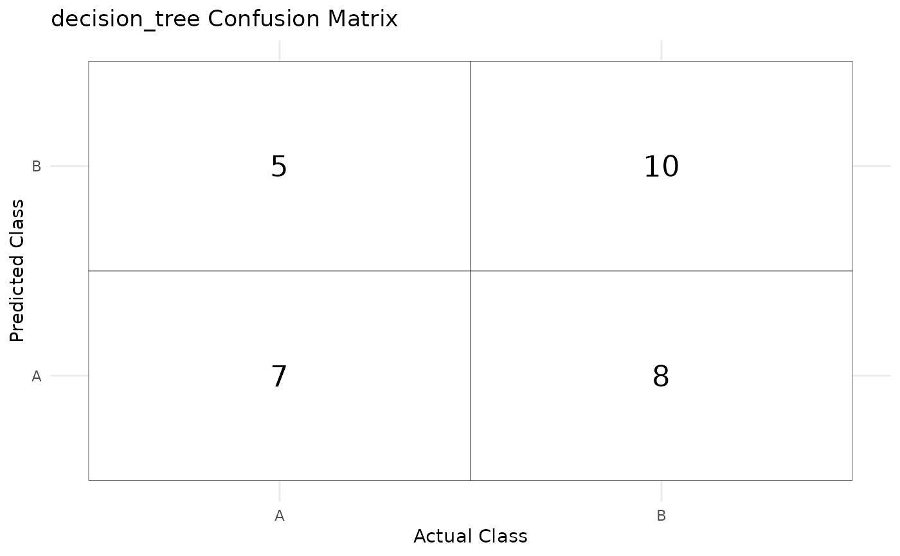

Create and save a confusion matrix plot and table
Source:R/create_confusion_outputs.R
create_confusion_outputs.RdThis function takes model predictions and generates a confusion matrix. It saves the confusion matrix as a PNG figure and as a CSV table in the specified output directory, and returns the ggplot object used to create the plot.
Arguments
- predictions
A data frame of predicted classes returned by
train_and_predict(), including a.pred_classcolumn and aclasscolumn representing true labels.- model_name
A string representing the model name (used for naming the output files).
- output_path
A string specifying the directory to save the confusion matrix plot and CSV table.
Examples
# Example usage of the `create_confusion_outputs` function
library(testthat)
library(parsnip)
library(recipes)
#> Loading required package: dplyr
#>
#> Attaching package: ‘dplyr’
#> The following object is masked from ‘package:testthat’:
#>
#> matches
#> The following objects are masked from ‘package:stats’:
#>
#> filter, lag
#> The following objects are masked from ‘package:base’:
#>
#> intersect, setdiff, setequal, union
#>
#> Attaching package: ‘recipes’
#> The following object is masked from ‘package:stats’:
#>
#> step
library(workflows)
library(dplyr)
library(rsample)
#>
#> Attaching package: ‘rsample’
#> The following object is masked from ‘package:testthat’:
#>
#> matches
set.seed(123)
data <- tibble(
class = sample(c("A", "B"), 150, replace = TRUE),
feature1 = rnorm(150),
feature2 = rnorm(150)
)
# Split the data into training and testing sets
data_split <- initial_split(data, prop = 0.8)
data_train <- training(data_split)
data_test <- testing(data_split)
# Define the model specification
model_spec <- decision_tree() %>%
set_engine("rpart") %>%
set_mode("classification")
# Define the recipe (preprocessing)
recipe <- recipe(class ~ feature1 + feature2, data = data_train) %>%
step_normalize(all_numeric())
# Generate predictions
predictions <- train_and_predict(model_spec, data_train, data_test, recipe)
# Convert predicted and true class labels to factors with the same levels
predictions$.pred_class <- factor(predictions$.pred_class, levels = c("A", "B"))
predictions$class <- factor(predictions$class, levels = c("A", "B"))
# Specify output path for saving the confusion matrix
output_path <- tempdir() # Using tempdir for testing
# Create and save the confusion matrix plot and table
conf_plot <- create_confusion_outputs(predictions, "decision_tree", output_path)
print(conf_plot)
